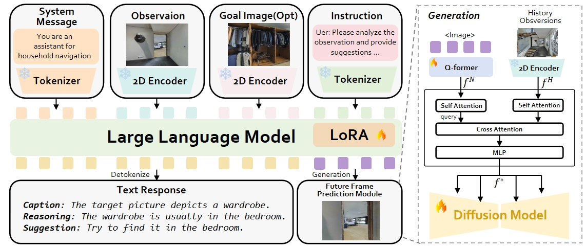
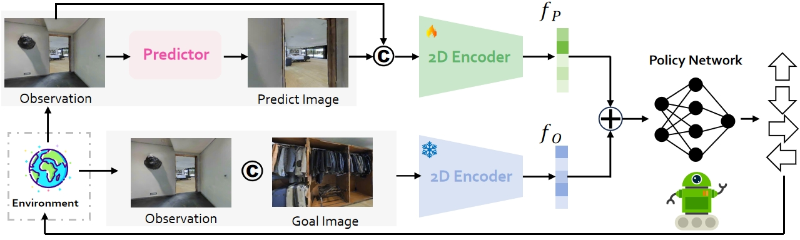

Navigating unfamiliar environments presents significant challenges for household robots, requiring the ability to recognize and reason about novel decoration and layout. Existing reinforcement learning methods cannot be directly transferred to new environments, as they typically rely on extensive mapping and exploration, leading to time-consuming and inefficient. To address these challenges, we try to transfer the logical knowledge and the generalization ability of pre-trained foundation models to zero-shot navigation. By integrating a large vision-language model with a diffusion network, our approach named NavigateDiff constructs a visual predictor that continuously predicts the agent's potential observations in the next step which can assist robots generate robust actions. Furthermore, to adapt the temporal property of navigation, we introduce temporal historical information to ensure that the predicted image is aligned with the navigation scene. We then carefully designed an information fusion framework that embeds the predicted future frames as guidance into goal-reaching policy to solve downstream image navigation tasks. This approach enhances navigation control and generalization across both simulated and real-world environments. Through extensive experimentation, we demonstrate the robustness and versatility of our method, showcasing its potential to improve the efficiency and effectiveness of robotic navigation in diverse settings.
NavigateDiff utilizes the logical knowledge and the generalization ability of pre-trained foundation models to improve zero-shot navigation in the presence of novel environments, scenes, and objects. How can we achieve this when foundation models trained on general-purpose Internet data do not provide direct guidance for selecting low-level navigation actions? Our key insight is to decouple the navigation problem into two stages: (I) generating intermediate future goals that need to be reached to successfully navigate, and (II) learning low-level control policies for reaching these future goals. In Stage (I), we build a Predictor by incorporating a Multimodal Large Language Model (MLLM) with a diffusion model, fine-tuned with parameter efficiency, specifically designed for Image Navigation. Stage (II) involves training a Fusion Navigation Policy on image navigation data and testing in new environments. We describe data collection and each of these stages in detail below and summarize the resulting navigation algorithm.
Multimodal Large Language Model. Given a current observation xt, a goal image xg, and a textual instruction y, the Predictor generates a future frame. As shown in Fig. 2, the current observation and goal image are processed through a frozen image encoder, while the textual instruction is tokenized and passed to the LLM. The Predictor can now generate Special Image Tokens image based on the instruction’s intent, though initially limited to the language modality. These tokens are then sent to the Future Frame Prediction Model to produce the final future frame prediction. In practice, we utilized LLaVA as our base model, which consists of a pre-trained CLIP visual encoder (ViT-L/14) and Vicuna-7B as the LLM backbone. To fine-tune the LLM, we applied LoRA, initializing a trainable matrix to adapt the model for the task.

NavigateDiff leverages a Future Frame pretrained Predictor to generate future frames based on current observation and navigation task information. A fusion navigation policy then executes the actions needed to reach the future frames. Alternating this loop enables us to accomplish the navigation task.

Content of Experiments. Content of Experiments. Content of Experiments. Content of Experiments. Content of Experiments. Content of Experiments.
BibTex Code Here